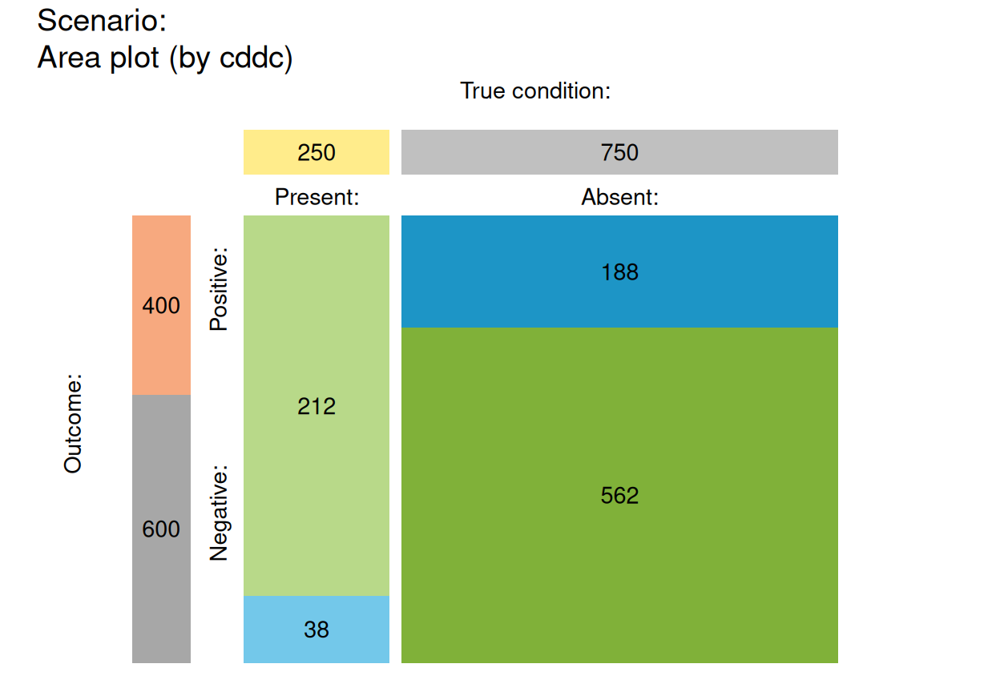

plot_mosaic drew a mosaic plot that
represents the proportions of frequencies in the current
population as relatives sizes of rectangular areas.
plot_mosaic(
prev = num$prev,
sens = num$sens,
mirt = NA,
spec = num$spec,
fart = NA,
N = num$N,
by = "cddc",
show_accu = TRUE,
w_acc = 0.5,
title_lbl = txt$scen_lbl,
col_sdt = c(pal["hi"], pal["mi"], pal["fa"], pal["cr"])
)The condition's prevalence prev.
The decision's sensitivity sens.
The decision's miss rate mirt.
The decision's specificity value spec.
The decision's false alarm rate fart.
The number of individuals in the population.
A character code specifying the perspective (or categories by which the population is split into subsets) with 3 options:
"cddc" ... by condition x decision;
"dccd" ... by decision x condition;
"cdac" ... by condition x accuracy.
Option for showing current and exact
accuracy metrics accu in the plot.
Weighting parameter w used to compute
weighted accuracy.
Text label for current plot title.
Colors for cases of 4 essential frequencies.
Default: col_sdt = c(pal["hi"], pal["mi"], pal["fa"], pal["cr"]).
plot_mosaic is deprecated – please use plot_area instead.
plot_area is the new version of this function.
Other visualization functions:
plot.riskyr(),
plot_area(),
plot_bar(),
plot_crisk(),
plot_curve(),
plot_fnet(),
plot_icons(),
plot_plane(),
plot_prism(),
plot_tab(),
plot_tree()
plot_mosaic() # plot with default options
#> Function 'plot_mosaic' is deprecated; using 'plot_area' instead.
#> Argument 'title_lbl' is deprecated. Please use 'main' instead.
